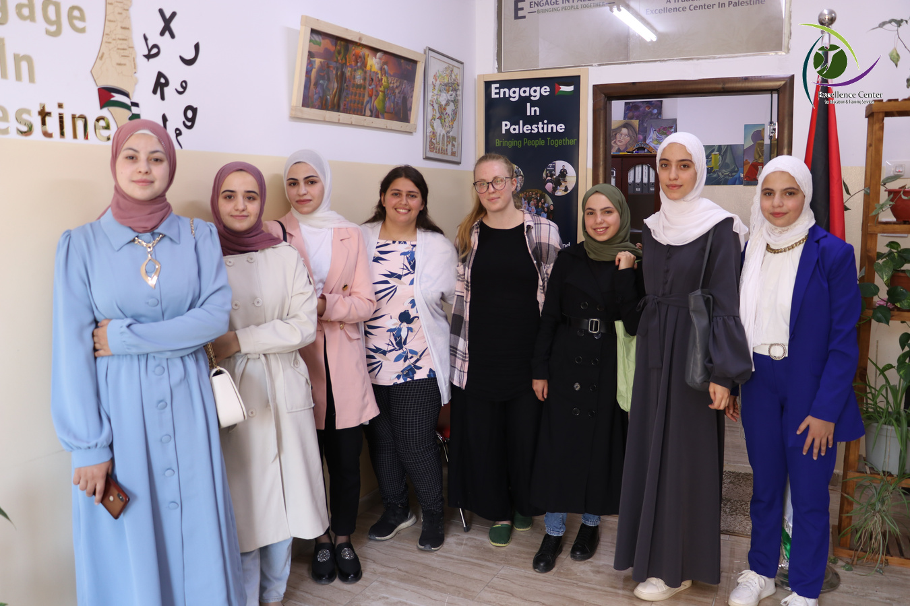
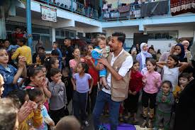

Volunteer In West Bank
Our volunteer programs in the West Bank, Palestine involve practicing conversational English, organizing workshops on various subjects, and teaching English in Hebron’s lively social setting. Our immersive and authentic approach provides a comprehensive experience for volunteers looking to work in a unique and vibrant environment in Palestine.

Volunteer with Palestinian Children with Project Hope
Project Hope works in the refugee camps, city centers, and villages of the Nablus region of the northern West Bank, teaching English and delivering other essential education, arts and sports programs to Palestinian children and youth.
Volunteer In HealthCare
Our volunteer program in Palestine pairs volunteers with local professionals, doctors, and nursing students to facilitate shared learning by working under their supervision of other local professionals. This exchange also provides valuable information about the healthcare system in Palestine, how Palestinians work in local hospitals and what students study in medical and healthcare specializations in Palestinian universities and colleges.
